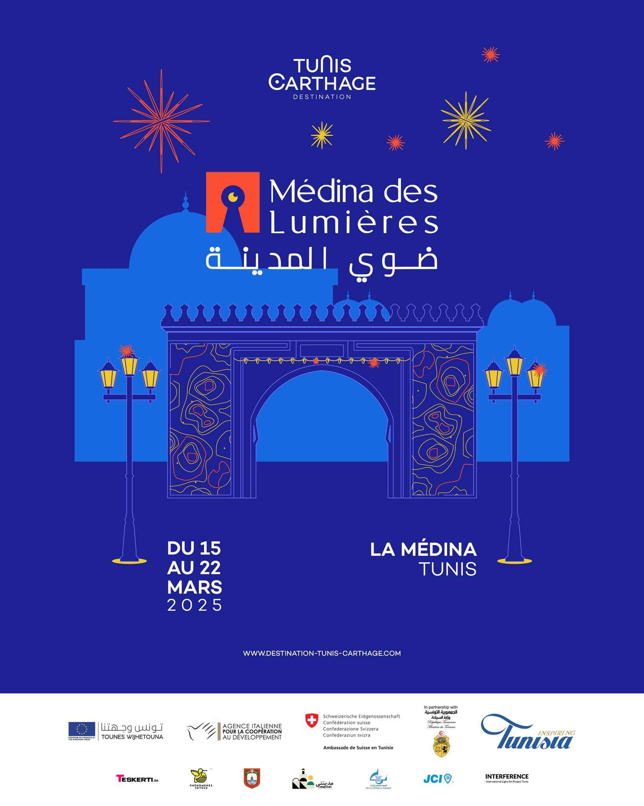

À propos du club
Le Club culturel du Médina est un lieu emblématique au cœur de la Tunisie, dédié à la promotion de la musique et de la culture tunisienne. Notre club organise régulièrement des événements artistiques variés, allant des soirées jazz aux concerts traditionnels Gnawa et aux performances de La Rachidia, offrant à chacun une expérience culturelle authentique et conviviale. Notre mission est de favoriser la rencontre entre artistes et public, de célébrer la richesse musicale de la Tunisie et de créer un espace où chacun peut vivre des moments uniques et inoubliables. Que vous soyez passionné de musique ou simplement curieux de découvrir notre patrimoine culturel, le Club culturel du Médina vous accueille pour partager la joie, l’émotion et la diversité de nos traditions artistiques.
